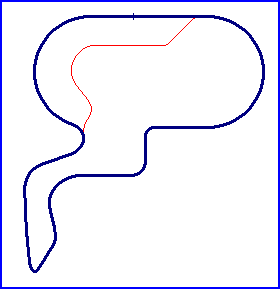

| Length | 0.932 Miles // 1.500 km |
| Direction | Anticlockwise |
Contact Information |
|
| Address |
Domaine Howard Pavillon 1 1300, boul. de Portland C.P. 610 Sherbrooke, PQ J1L 1Y1 |
| Telephone | +1 (1)819 5604270 |
| Website | http://www.challengecanada.com |
Sherbrooke
"Bertrand Fabi" Ice Racing Course

| Length | 0.932 Miles // 1.500 km |
| Direction | Anticlockwise |
Contact Information |
|
| Address |
Domaine Howard Pavillon 1 1300, boul. de Portland C.P. 610 Sherbrooke, PQ J1L 1Y1 |
| Telephone | +1 (1)819 5604270 |
| Website | http://www.challengecanada.com |
Lasted Updated: 21 April 2003 18:22:08 GMT Daylight Time